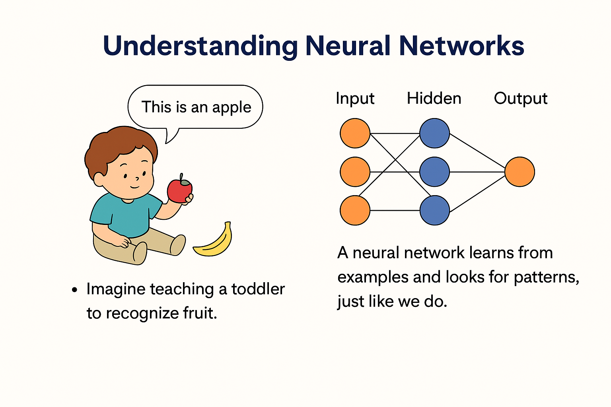

Neural Networks— Explained in a simple way:
Imagine teaching a toddler to recognize fruit. You show them many pictures, saying “This is an apple,” “This is a banana.” Over time, they learn to spot patterns: apples are round and red, bananas are long and yellow.
A neural network works kind of like that toddler’s brain—it learns by seeing examples and spotting patterns. It’s made of layers of “neurons”, which are tiny decision-makers. Each neuron looks at bits of the data and passes its conclusion to the next layer. By the end, the network has built a smart guess—like saying “This picture looks like an apple.”
But just like a toddler might sometimes call a tomato an apple, neural networks learn best when they get lots of practice and feedback.
Below is the screenshot of the explanation page created for introducing Neural Networks simply.
Neural Networks – Explained Simply
As artificial intelligence (AI) becomes increasingly integrated into business, education, and everyday life, understanding its foundational concepts is essential. One such concept is the neural network, a key component of many machine learning systems. However, technical jargon and complex mathematics can create barriers for non-experts.
This artifact was created to bridge that gap by offering a clear, approachable explanation of neural networks using real-world analogies and visual breakdowns. Inspired by Albert Einstein’s quote, “If you can’t explain it simply, you don’t understand it well enough,” the goal is to make learning both effective and inclusive.
This artifact is a standalone HTML page that explains the concept of neural networks in a simple, engaging format. It begins with a relatable analogy—teaching a child to recognize animals—and gradually builds up to more structured technical concepts like input layers, hidden layers, and outputs.
The explanation is delivered using bullet points, headings, and progressive disclosure techniques that guide the reader step by step without overwhelming them. It also includes optional links, visuals, and download formats to accommodate different learning styles and devices.
The artifact is suitable for training sessions, student projects, corporate learning programs, or any situation where basic AI/ML literacy is needed.
The primary objective of this artifact is to simplify a technical concept—neural networks—so that non-technical audiences can grasp its purpose, structure, and impact. In doing so, it supports broader goals of digital literacy, AI adoption, and change readiness in organizations and learning environments.
Specifically, this project aims to: